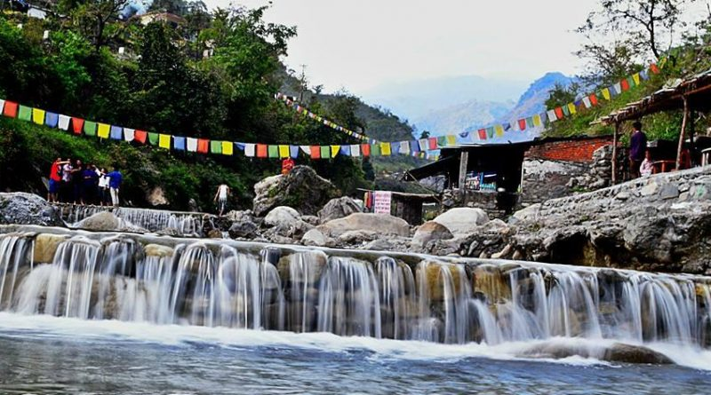
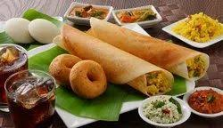

ABOUT

Nested in the mountain ranges of the Himalaya, Dehradun is one of the oldest cities of India and is recently declared as the Provisional Capital of newly created Uttaranchal (Now Uttarakhand) State in the month of Nov’2000. Also known as the ‘Adobe of Drona’, Dehradun has always been an important center for Garhwal rulers which was captured by the British. The headquarters of many National Institutes and Organizations like ONGC, Survey Of India, , Indian Institute of Petroleum etc are located in the city. Some of the premier educational and Training Institutes like Indian Miltary Academy, RIMC(Rashtriya Indian Military College), Indira Gandhi National Forest Academy(IGNFA), Lal Bahadur Shahstri National Academy of Administration(LBSNAA)etc are also there in Dehradun. It is a favoured tourist destination as it attracts tourists, pilgrims and enthusiasts from various walks of life to its serene environs. Add to this the abundance of special Basmati rice, tea and leechi gardens which contribute in turning the city into a paradise..
Places to Visit
Tucked away in the Doon Valley, Dehradun is a popular and preferred hill station in Uttarakhand. It boasts of the scenic backdrop of the Garhwal Himalayas that invites couples, families and solo travellers alike. The best places to visit in Dehradun consist of religious attractions, tourist points, and wildlife havens. There are places to chill out and watch the sun go down with your partner, tourist pockets to explore with your family, and adventure stops to try thrilling activities with friends. Dehradun tourism has many tourist places to let you plan your tour accordingly. You will have the time of your life here.
Local Cuisine
Dehradun is best known for its multi cuisines from North Indian, Pahadi food to authentic Chinese & Tibetan delicacies. Maximum of the best eating joints in the town can be located along the Rajpur Road, Astley Hall, Dharampur, Chakrata Road &Mussouri Road. Here is a list of Dehradun's famous lip-smacking street foods and the places where you can enjoy them with your buddies & family.